Canais · Redes sociais
Peças de rede em tamanho real
Escolha o modelo, preencha os campos e baixe o PNG em 1080 de largura. A peça só sai quando passa nas regras do manual: até 6 palavras no título, contraste conferido no pior pixel sob o texto, prova com origem, turma com data futura, cota de Campo de Produto respeitada e foto real com autorização.
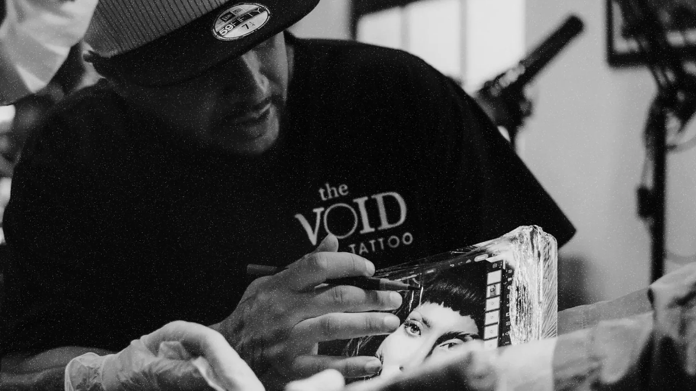
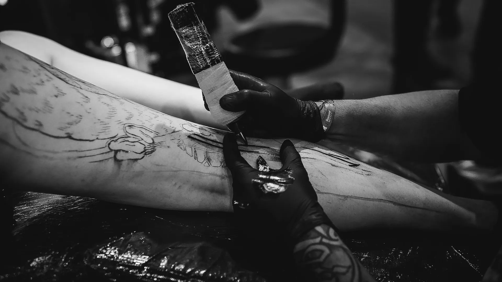
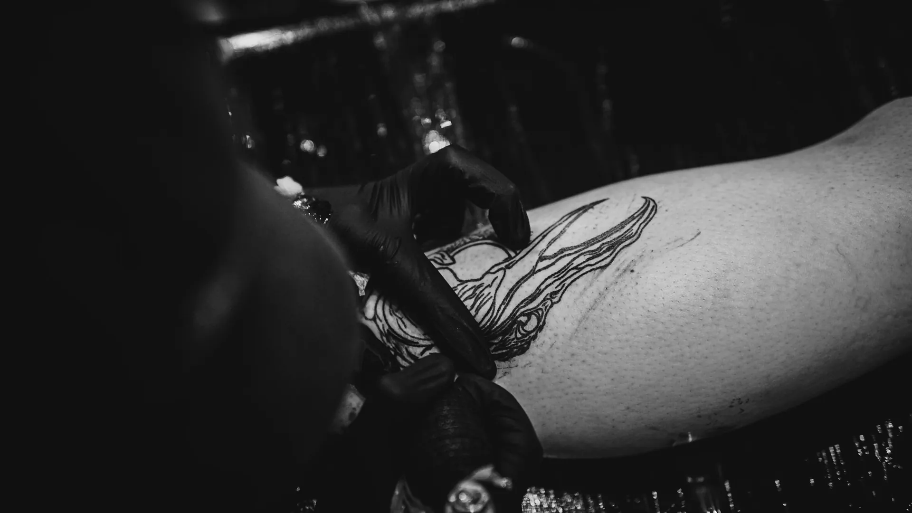
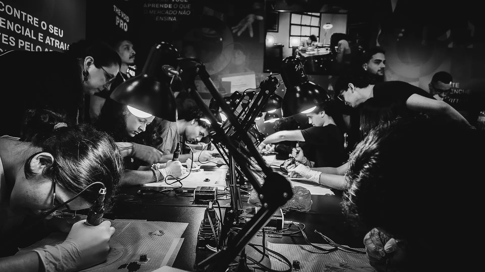
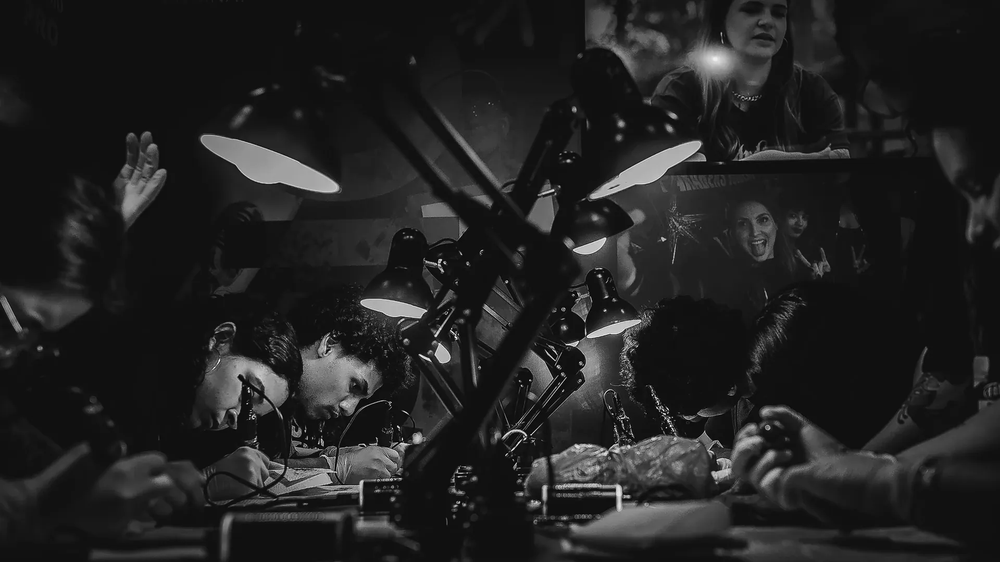
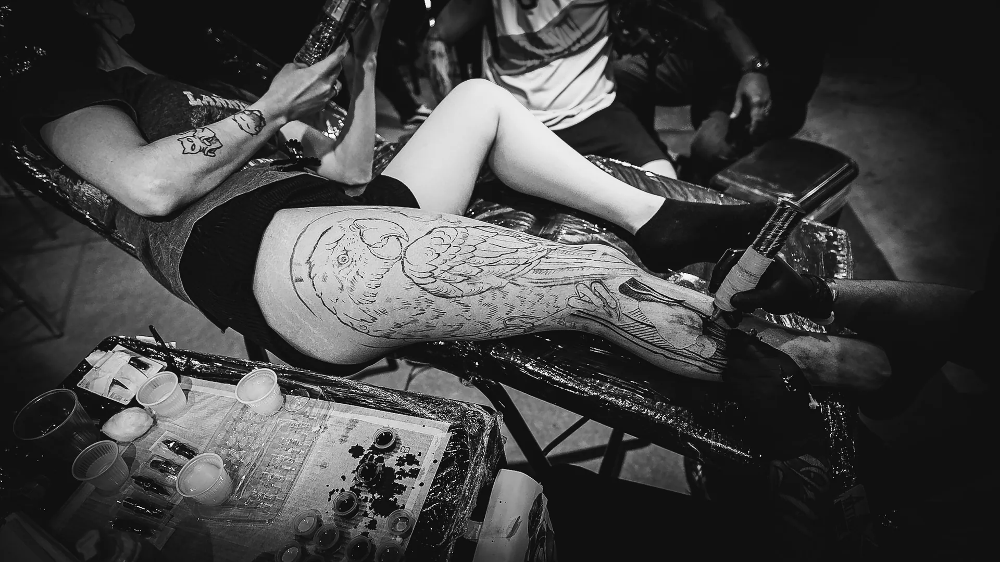
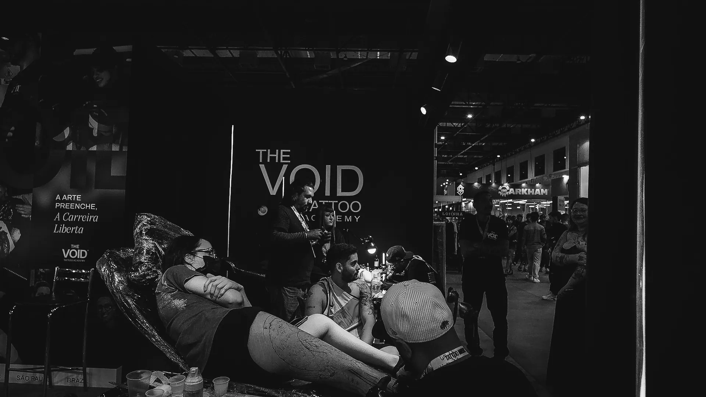
Foto: acervo The VOID. Fotos reais da escola, dos professores, dos alunos e dos eventos, tratadas no preto e branco Ritual. Uso autorizado pela The VOID, 10/2026. Cada modelo abaixo já abre com uma foto do acervo; troque pelo botão Acervo, por tema, ou envie a sua.
Prévia da peça
Campos
Conferência
Cada linha é uma regra do manual. Uma linha em vermelho trava a exportação.
Exportar
Conferindo a peça.
Arquivo:
Regras de toda peça
O que vale para os 13
- Logotipo uma vez, sempre o arquivo oficial: horizontal branco de 300 u no rodapé ou de produto no Campo de Produto.
- No máximo três recursos por peça; o grão conta como um.
- Título em caixa alta com até 6 palavras e até 3 linhas; a voz em off entra numa linha.
- Campo de Produto em uma peça a cada seis no feed e em uma tela a cada cinco no carrossel.
Como o editor confere
- O título estreita antes de encolher: largura 112, 100, 92 e 85; depois o tamanho desce até 96 u. Se ainda passar de 3 linhas, reescreva.
- O fundo é desenhado sem o texto e cada letra é medida contra o pixel mais claro (ou mais escuro) que está sob ela: 4,5:1 abaixo de 96 u, 3:1 a partir daí.
- Prova sem origem, ou em validação, não sai. Turma com data passada também não.
Medidas
- Feed 1080 por 1350, margem de 72 u, miolo 3:4 protegido para o corte do perfil.
- Story e Reels 1080 por 1920, conteúdo entre y = 270 e y = 1500; 120 u livres à direita nos Reels.
- Horizontal 1920 por 1080, margens de 120 u nas laterais e 96 u em cima e embaixo.
Do rebranding, para referência
Aplicações de rede do Figma do rebranding (agência, 2025). Mostram o tom das peças: preto dominante, foto real em preto e branco e o letreiro. São referência de linguagem; as peças que vão ao ar saem deste editor, com as regras conferidas. Uso autorizado pela The VOID, 10/2026.
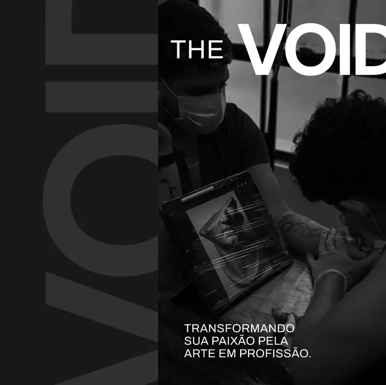
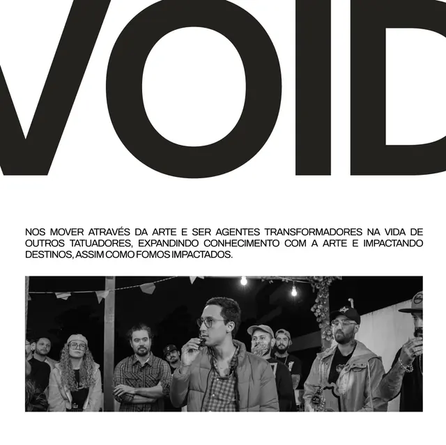
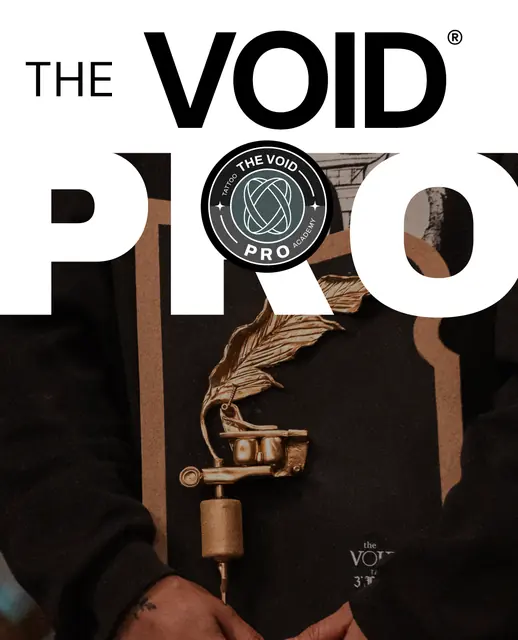
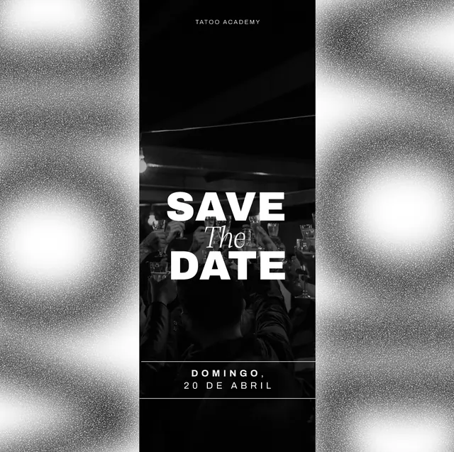
Fontes desta página: Plataforma de Branding, aureadesign, 2025 (frases de rito, Convenção, Talks e Pro); Brand DNA da The VOID, set/2026 (crença do Gabriel, voz em off, fotografia); Personas, set/2026; site oficial, consultado em 06/10/2026 (frases do Start e da aula experimental). Regras: manual de marca, seções 2, 3.4, 4.4, 6, 7.1, 11 e 12.3.